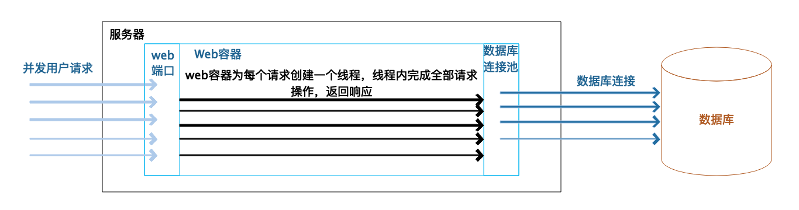
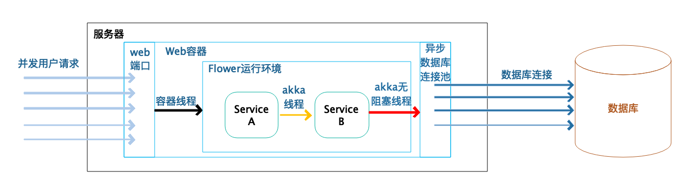
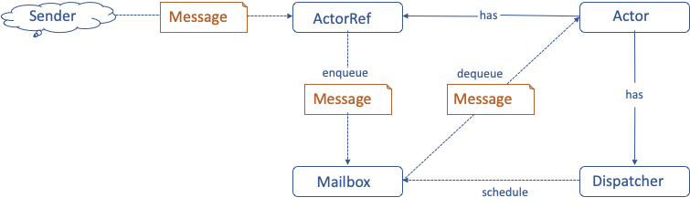
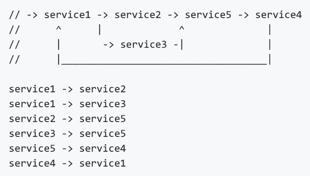
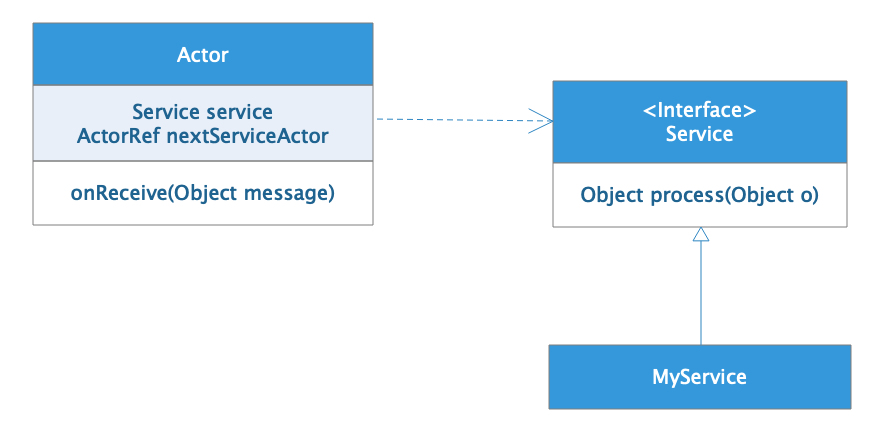
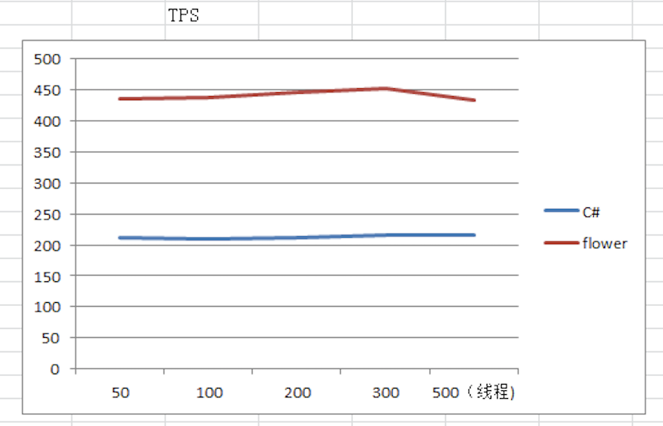
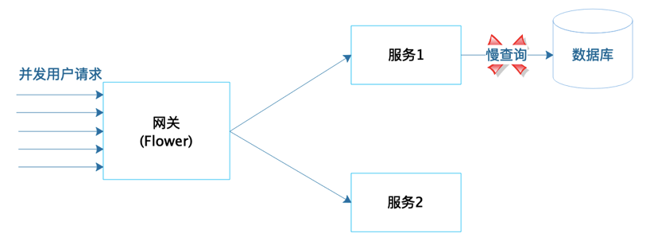

- 00 开篇词 掌握软件开发技术的第一性原理.md.html
- 01 程序运行原理：程序是如何运行又是如何崩溃的？.md.html
- 02 数据结构原理：Hash表的时间复杂度为什么是O(1)？.md.html
- 03 Java虚拟机原理：JVM为什么被称为机器（machine）？.md.html
- 04 网络编程原理：一个字符的互联网之旅.md.html
- 05 文件系统原理：如何用1分钟遍历一个100TB的文件？.md.html
- 06 数据库原理：为什么PrepareStatement性能更好更安全？.md.html
- 07 答疑 Java Web程序的运行时环境到底是怎样的？.md.html
- 07 编程语言原理：面向对象编程是编程的终极形态吗？.md.html
- 08 软件设计的方法论：软件为什么要建模？.md.html
- 09 软件设计实践：如何使用UML完成一个设计文档？.md.html
- 10 软件设计的目的：糟糕的程序员比优秀的程序员差在哪里？.md.html
- 11 软件设计的开闭原则：如何不修改代码却能实现需求变更？.md.html
- 12 软件设计的依赖倒置原则：如何不依赖代码却可以复用它的功能？.md.html
- 13 软件设计的里氏替换原则：正方形可以继承长方形吗？.md.html
- 14 软件设计的单一职责原则：为什么说一个类文件打开最好不要超过一屏？.md.html
- 15 软件设计的接口隔离原则：如何对类的调用者隐藏类的公有方法？.md.html
- 16 设计模式基础：不会灵活应用设计模式，你就没有掌握面向对象编程.md.html
- 17 设计模式应用：编程框架中的设计模式.md.html
- 18 反应式编程框架设计：如何使程序调用不阻塞等待，立即响应？.md.html
- 19 组件设计原则：组件的边界在哪里？.md.html
- 20 答疑 对于设计模式而言，场景到底有多重要？.md.html
- 20 领域驱动设计：35岁的程序员应该写什么样的代码？.md.html
- 21 分布式架构：如何应对高并发的用户请求.md.html
- 22 缓存架构：如何减少不必要的计算？.md.html
- 23 异步架构：如何避免互相依赖的系统间耦合？.md.html
- 24 负载均衡架构：如何用10行代码实现一个负载均衡服务？.md.html
- 25 数据存储架构：如何改善系统的数据存储能力？.md.html
- 26 搜索引擎架构：如何瞬间完成海量数据检索？.md.html
- 27 微服务架构：微服务究竟是灵丹还是毒药？.md.html
- 28 高性能架构：除了代码，你还可以在哪些地方优化性能？.md.html
- 29 高可用架构：我们为什么感觉不到淘宝应用升级时的停机？.md.html
- 30 安全性架构：为什么说用户密码泄漏是程序员的锅？.md.html
- 31 大数据架构：大数据技术架构的思想和原理是什么？.md.html
- 32 AI与物联网架构：从智能引擎到物联网平台.md.html
- 33 区块链技术架构：区块链到底能做什么？.md.html
- 33 答疑 互联网需要解决的技术问题是什么？.md.html
- 34 技术修炼之道：同样工作十几年，为什么有的人成为大厂架构师，有的人失业？.md.html
- 35 技术进阶之道：你和这个星球最顶级的程序员差几个等级？.md.html
- 36 技术落地之道：你真的知道自己要解决的问题是什么吗？.md.html
- 37 技术沟通之道：如何解决问题？.md.html
- 38 技术管理之道：你真的要转管理吗？.md.html
- 38 答疑 工作中的交往和沟通，都有哪些小技巧呢？.md.html
- 加餐 软件设计文档示例模板.md.html
- 结束语 期待未来的你，成为优秀的软件架构师.md.html
- 捐赠
18 反应式编程框架设计：如何使程序调用不阻塞等待，立即响应？
我们在专栏[第1篇]就讨论了为什么在高并发的情况下，程序会崩溃。主要原因是，在高并发的情况下，有大量用户请求需要程序计算处理，而目前的处理方式是，为每个用户请求分配一个线程，当程序内部因为访问数据库等原因造成线程阻塞时，线程无法释放去处理其他请求，这样就会造成请求堆积，不断消耗资源，最终导致程序崩溃。

这是传统的Web应用程序运行期的线程特性。对于一个高并发的应用系统来说，总是同时有很多个用户请求到达系统的Web容器。Web容器为每个请求分配一个线程进行处理，线程在处理过程中，如果遇到访问数据库或者远程服务等操作，就会进入阻塞状态，这个时候，如果数据库或者远程服务响应延迟，就会出现程序内的线程无法释放的情况，而外部的请求不断进来，导致计算机资源被快速消耗，最终程序崩溃。
那么有没有不阻塞线程的编程方法呢？
反应式编程
答案就是反应式编程。反应式编程本质上是一种异步编程方案，在多线程（协程）、异步方法调用、异步I/O访问等技术基础之上，提供了一整套与异步调用相匹配的编程模型，从而实现程序调用非阻塞、即时响应等特性，即开发出一个反应式的系统，以应对编程领域越来越高的并发处理需求。
人们还提出了一个反应式宣言，认为反应式系统应该具备如下特质：
即时响应，应用的调用者可以即时得到响应，无需等到整个应用程序执行完毕。也就是说应用调用是非阻塞的。
回弹性，当应用程序部分功能失效的时候，应用系统本身能够进行自我修复，保证正常运行，保证响应，不会出现系统崩溃和宕机的情况。
弹性，系统能够对应用负载压力做出响应，能够自动伸缩以适应应用负载压力，根据压力自动调整自身的处理能力，或者根据自身的处理能力，调整进入系统中的访问请求数量。
消息驱动，功能模块之间，服务之间，通过消息进行驱动，完成服务的流程。
目前主流的反应式编程框架有RxJava、Reactor等，它们的主要特点是基于观察者设计模式的异步编程方案，编程模型采用函数式编程。
观察者模式和函数式编程有自己的优势，但是反应式编程并不是必须用观察者模式和函数式编程。Flower就是一个纯消息驱动，完全异步，支持命令式编程的反应式编程框架。
下面我们就看看Flower如何实现异步无阻塞的调用，以及Flower这个框架设计使用了什么样的设计原则与模式。
反应式编程框架Flower的基本原理
一个使用Flower框架开发的典型Web应用的线程特性如下图所示：

当并发用户到达应用服务器的时候，Web容器线程不需要执行应用程序代码，它只是将用户的HTTP请求变为请求对象，将请求对象异步交给Flower框架的Service去处理，自身立刻就返回。因为容器线程不做太多的工作，所以只需极少的容器线程就可以满足高并发的用户请求，用户的请求不会被阻塞，不会因为容器线程不够而无法处理。相比传统的阻塞式编程，Web容器线程要完成全部的请求处理操作，直到返回响应结果才能释放线程；使用Flower框架只需要极少的容器线程就可以处理较多的并发用户请求，而且容器线程不会阻塞。
用户请求交给基于Flower框架开发的业务Service对象以后，Service之间依然是使用异步消息通讯的方式进行调用，不会直接进行阻塞式的调用。一个Service完成业务逻辑处理计算以后，会返回一个处理结果，这个结果以消息的方式异步发送给它的下一个Service。
传统编程模型的Service之间如果进行调用，如我们在专栏第一篇讨论的那样，被调用的Service在返回之前，调用的Service方法只能阻塞等待。而Flower的Service之间使用了AKKA Actor进行消息通信，调用者的Service发送调用消息后，不需要等待被调用者返回结果，就可以处理自己的下一个消息了。事实上，这些Service可以复用同一个线程去处理自己的消息，也就是说，只需要有限的几个线程就可以完成大量的Service处理和消息传输，这些线程不会阻塞等待。
我们刚才提到，通常Web应用主要的线程阻塞，是因为数据库的访问导致的线程阻塞。Flower支持异步数据库驱动，用户请求数据库的时候，将请求提交给异步数据库驱动，立刻就返回，不会阻塞当前线程，异步数据库访问连接远程的数据库，进行真正的数据库操作，得到结果以后，将结果以异步回调的方式发送给Flower的Service进行进一步的处理，这个时候依然不会有线程被阻塞。
也就是说，使用Flower开发的系统，在一个典型的Web应用中，几乎没有任何地方会被阻塞，所有的线程都可以被不断地复用，有限的线程就可以完成大量的并发用户请求，从而大大地提高了系统的吞吐能力和响应时间，同时，由于线程不会被阻塞，应用就不会因为并发量太大或者数据库处理缓慢而宕机，从而提高了系统的可用性。
Flower框架实现异步无阻塞，一方面是利用了Web容器的异步特性，主要是Servlet3.0以后提供的AsyncContext，快速释放容器线程；另一方面是利用了异步的数据库驱动以及异步的网络通信，主要是HttpAsyncClient等异步通信组件。而Flower框架内，核心的应用代码之间的异步无阻塞调用，则是利用了Akka 的Actor模型实现。
Akka Actor的异步消息驱动实现如下：

一个Actor向另一个Actor进行通讯的时候，当前Actor就是一个消息的发送者sender，当它想要向另一个Actor进行通讯的时候，就需要获得另一个Actor的ActorRef，也就是一个引用，通过引用进行消息通信。而ActorRef收到消息以后，会将这个消息放入到目标Actor的Mailbox里面去，然后就立即返回了。
也就是说一个Actor向另一个Actor发送消息的时候，不需要另一个Actor去真正地处理这个消息，只需要将消息发送到目标Actor的Mailbox里面就可以了。自己不会被阻塞，可以继续执行自己的操作，而目标Actor检查自己的Mailbox中是否有消息，如果有消息，Actor则会在从Mailbox里面去获取消息，对消息进行异步的处理，而所有的Actor会共享线程，这些线程不会有任何的阻塞。
反应式编程框架Flower的设计方法
但是直接使用Actor进行编程有很多不便，Flower框架对Actor进行了封装，开发者只需要编写一些细粒度的Service，这些Service会被包装在Actor里面，进行异步通信。
Flower Service例子如下：
public class ServiceA implements Service<Message2> {
@Override
public Object process(Message2 message) {
return message.getAge() + 1;
}
}
每个Service都需要实现框架的Service接口的process方法，process方法的输入参数就是前一个Service process方法的返回值，这样只需要将Service编排成一个流程，Service的返回值就会变成Actor的一个消息，被发送给下一个Service，从而实现Service的异步通信。
Service的流程编排有两种方式，一种方式是编程实现，如下：
getServiceFlow().buildFlow("ServiceA", "ServiceB");
表示ServiceA的返回值将作为消息发送给ServiceB，成为ServiceB的输入值，这样两个Service就可以合作完成一些更复杂的业务逻辑。
Flower还支持可视化的Service流程编排，像下面这张图一样编辑流程定义文件，就可以开发一个异步业务处理流程。

那么这个Flower框架是如何实现的呢？
Flower框架的设计也是基于前面专栏讨论过的[依赖倒置原则]。所有应用开发者实现的Service类都需要包装在Actor里面进行异步调用，但是Actor不会依赖开发者实现的Service类，开发者也不会依赖Actor类，他们共同依赖一个Service接口，这个接口是框架提供的，如上面例子所示。
Actor与Service的依赖倒置关系如下图所示：

每个Actor都依赖一个Service接口，而具体的Service实现类，比如MyService，则实现这个Service接口。在运行期实例化Actor的时候，这个接口被注入具体的Service实现类，比如MyService。在Flower中，调用MyService对象，其实就是给包装MyService对象的Actor发消息，Actor收到消息，执行自己的onReceive方法，在这个方法里，Actor调用MyService的process方法，并将onReceive收到的Message对象当做process的输入参数传入。
process处理完成后，返回一个Object对象。Actor会根据编排好的流程，获取MyService在流程中的下一个Service对应的Actor，即nextServiceActor，将process返回的Object对象当做消息发送给这个nextServiceActor。这样，Service之间就根据编排好的流程，异步、无阻塞地调用执行起来了。
反应式编程框架Flower的落地效果
Flower框架在部分项目中落地应用，应用效果较为显著，一方面，Flower可以显著提高系统的性能。这是某个C#开发的系统使用Flower重构后的TPS性能比较，使用Flower开发的系统TPS差不多是原来C#系统的两倍。

另一方面，Flower对系统可用性也有较大提升，目前常见互联网应用架构如下图：

用户请求通过网关服务器调用微服务完成处理，那么当有某个微服务连接的数据库查询执行较慢时，如图中服务1，那么按照传统的线程阻塞模型，就会导致服务1的线程都被阻塞在这个慢查询的数据库操作上。同样的，网关线程也会阻塞在调用这个延迟比较厉害的服务1上。
最终的效果就是，网关所有的线程都被阻塞，即使是不调用服务1的用户请求也无法处理，最后整个系统失去响应，应用宕机。使用阻塞式编程，实际的压测效果如下，当服务1响应延迟，出错率大幅飙升的时候，通过网关调用正常的服务2的出错率也非常高。
使用Flower开发的网关，实际压测效果如下，同样服务1响应延迟，出错率极高的情况下，通过Flower网关调用服务2完全不受影响。
小结
事实上，Flower不仅是一个反应式Web编程框架，还是反应式的微服务框架。也就是说，Flower的Service可以远程部署到一个Service容器里面，就像我们现在常用的微服务架构一样。Flower会提供一个独立的Flower容器，用于启动一些Service，这些Service在启动了以后，会向注册中心进行注册，而且应用程序可以将这些分布式的Service进行流程编排，得到一个分布式非阻塞的微服务系统。整体架构和主流的微服务架构很像，主要的区别就是Flower的服务是异步的，通过流程编排的方式进行服务调用，而不是通过接口依赖的方式进行调用。
你可以点击这里进入Flower框架的源代码地址，欢迎你参与Flower开发，也欢迎将Flower应用到你的系统开发中。你对Flower有什么疑问，也欢迎与我交流。
思考题
反应式编程虽然能带来性能和可用性方面的提升，但是也带来一些问题，你觉得反应式编程可能存在的问题有哪些？应该如何应对？你是否愿意在工作实践中尝试反应式编程？
欢迎你在评论区写下你的思考，也欢迎把这篇文章分享给你的朋友或者同事，一起交流。
© 2019 - 2023 Liangliang Lee. Powered by gin and hexo-theme-book.